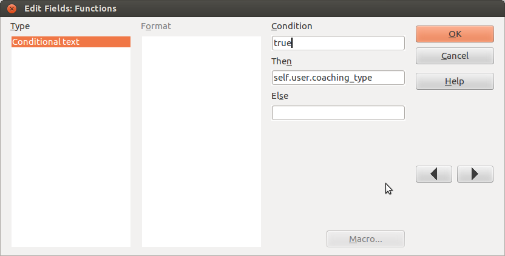

20130809 (Friday, 09 August 2013)¶
Continued to work on welfare.reception. Now it is time to insert some real attestations. Here we go with the devils in the detail!
LibreOffice & appy.pod : Using conditional fields to insert Python expressions¶
I was glad to discover that appy.pod now uses conditional fields. I used to believe that “defining Python expressions with pod was done via text inserted in ‘track changes’ mode”. But “conditional fields (as explained here) have become the preferred way to insert Python expressions.” This is very nice because now it is possible to copy and paste them. Thanks, Gaëtan, for your work!
One pitfall however (in LibreOffice, not in appy.pod) took me more than two hours of my life: All my conditional fields contained the word “true” in the “Condition” part and a Python expression to be evaluated by appy.pod in the “Then” part. Here is how this looked:
I had six fields with the following expressions:
- sc.site_company.city.name.upper()
- self.user
- self.user.coaching_type
- dtos(self.date)
- self.user.initials
- self.subject
Only the second, the fourth and the sixth (those who are marked in bold) actually worked.
Do you want to know why? Then read Bug #58533 at freedesktop.org. (Summary: LibreOffice doesn’t actually just insert the Then or Else part depending on the condition, but uses artificial intelligence: if the text contains two periods, then it is expected to be a database field. To avoid this magic behaviour, simply include it within quotes. Good to know...
Avoiding recursive .odt templates¶
So we are going to generate many different documents using many templates. But they should share some common base. And that common base contains variables (i.e. Python expressions to be rendered by appy.pod). Tried with a base template base.ott which would get inherited by a letter.odt which would serve as template for appy.pod. But that doesn’t work: once letter.odt is created, its contents won’t be updated when the content of the base.ott changes.
Another observation is that the content of these templates is mostly the same for every centre. If some formulation in the content of some certification changes in one centre, it is likely that the other centres also want this change.
I think the best solution is to add a new field NoteType.body_template which points to a *.body.html file. And then give a context variable “body” to the appy.pod renderer.

{kind=link}